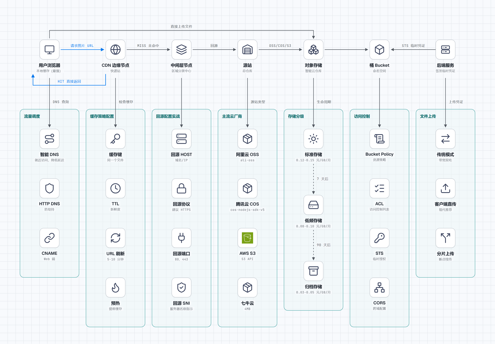

对象存储与 CDN
本章目录 · 1 节
对象存储与 CDN 原理
学习指南：本文会带你走完一条完整的链路——从文件上传到用户下载。你会看到对象存储如何像"智能仓库"一样管理海量文件，CDN 如何像"快递网点"一样把内容送到用户家门口，以及这中间有哪些"坑"等着你跳进去。建议先了解基础的 HTTP 请求和 DNS 解析原理。
在开始之前，建议你先补几块"基础砖"：
- HTTP 请求流程：可以先阅读 浏览器输入 URL 后发生了什么 了解完整的请求链路。
- DNS 解析原理：如果你对域名解析还不太熟悉，可以先看 DNS 查询流程 的图解部分。
0. 引言：文件上传下载这么"慢的原理
想象一下这个场景：你在一个图片社区上传了一张 10MB 的高清照片，结果等了半分钟才传完；而你的朋友在北京，点击下载却只要 2 秒。为什么同一张文件，上传和下载的体验天差地别？
或者再想想：你的电商网站双十一搞活动，商品详情页突然涌入百万流量，服务器直接"躺平"。是带宽不够？还是架构设计有问题？
这些问题的答案，都藏在对象存储和 CDN 这对"黄金搭档"里。
1. 对象存储：你的"智能云仓库"
1.1 对象存储概述
传统文件系统就像你家衣柜：衣服按"上衣/裤子/裙子"分层放，你要找一件衬衫，得先打开衣柜→上衣区→衬衫格。这种"层级嵌套"的模式，在文件数量爆炸时会变得极其笨重。
对象存储则像现代仓储物流：每个包裹都有一个唯一的"快递单号"（对象键），你只需报单号，仓库机器人就能从海量包裹中精准取出。
核心区别一览：
| 维度 | 传统文件系统 | 对象存储 |
|---|---|---|
| 组织方式 | 层级目录树 | 扁平键值对 |
| 访问协议 | POSIX（本地文件操作） | HTTP/REST API |
| 扩展性 | 单机容量有限 | 近乎无限水平扩展 |
| 元数据 | 基础属性（大小、时间） | 丰富的自定义元数据 |
| 典型场景 | 本地办公文档 | 图片/视频/备份/静态资源 |
1.2 对象存储的核心概念
桶（Bucket）：你的"仓库分区"
桶是对象存储的顶级容器，相当于一个独立的命名空间。所有对象都必须存放在某个桶中。
命名规则（以阿里云 OSS 为例）：
- 全局唯一：在整个云厂商的所有用户中不能重复
- 只能包含小写字母、数字和短横线
- 必须以小写字母或数字开头和结尾
- 长度在 3-63 个字符之间
实战踩坑：曾经有个团队按业务线创建了几十个桶，结果月底账单出来傻眼了——每个桶都有最低存储费用和请求费用。建议：按"环境+用途"组合规划桶，比如 prod-static-assets、dev-backup-archive。
对象（Object）：你的"数据包裹"
对象是存储的基本单元，由三部分组成：
键（Key）：对象的唯一标识，相当于"快递单号"
- 示例：
images/avatar/2024/user123.jpg - 虽然看起来像路径，但本质只是字符串
- 示例：
数据（Data）：对象的内容本身
- 可以是任意二进制数据
- 大小限制取决于云厂商（通常单个对象 5TB 以内）
元数据（Metadata）：描述对象的附加信息
- 系统元数据：Content-Type、ETag、Last-Modified 等
- 自定义元数据：如
x-oss-meta-owner、x-oss-meta-project
访问控制：谁能动我的"仓库"？
对象存储提供多层权限控制：
| 层级 | 控制方式 | 典型场景 |
|---|---|---|
| 桶级别 | Bucket Policy（资源策略） | 禁止所有外网访问、只允许特定 IP |
| 对象级别 | ACL（访问控制列表） | 公开图片、私有文档 |
| 临时授权 | STS（安全令牌服务） | 前端直传、移动端上传 |
安全红线：永远不要把 AccessKey ID 和 AccessKey Secret 写在前端代码里！正确做法是：前端向你的后端申请临时 STS 凭证，后端验证身份后返回带过期时间的临时凭证。
2. CDN：你的"全球快递网络"
2.1 需要 CDN的原理
想象你开了一家网店，服务器放在深圳。现在有个用户在北京访问你的图片：
没有 CDN：请求从北京→河北→河南→湖北→湖南→广东→深圳，跨越 2000 多公里，来回就是 4000 多公里。光网络传输就要几十毫秒，遇到网络拥堵更惨。
有了 CDN：请求从北京直接到北京的 CDN 节点（可能就在北京联通机房），距离从 2000 公里变成 20 公里，延迟从 50ms 变成 5ms。
这就是 CDN 的核心价值：让内容离用户更近。
2.2 CDN 的核心架构
边缘节点：离用户最近的"快递站"
边缘节点是 CDN 网络中最接近用户的层级，通常部署在：
- 运营商机房（联通/电信/移动）
- 大城市互联网交换中心
- 重要交通枢纽
中国主要 CDN 节点分布：
- 一线城市：北京、上海、广州、深圳
- 二线城市：杭州、南京、成都、武汉、西安
- 海外：香港、新加坡、东京、硅谷、法兰克福
源站：内容的"总仓库"
源站是 CDN 回源获取内容的地方，可以是：
- 对象存储（OSS/COS/S3）
- 自建服务器（ECS/物理机）
- 负载均衡（SLB/CLB）
关键配置：
- 回源 HOST：CDN 节点访问源站时使用的域名/IP
- 回源协议：HTTP 还是 HTTPS
- 回源端口：80、443 还是自定义端口
中间层节点："区域分拨中心"
在边缘节点和源站之间，CDN 通常还有一层或多层中间节点：
- 汇聚节点：聚合多个边缘节点的回源请求，减少源站压力
- 区域中心：负责一个大区的内容分发和调度
这种分层架构的好处：
- 降低源站压力：1000 个边缘节点的请求，可能只需要向源站发起 10 次
- 提高命中率：热门内容在中间层就被拦截，不需要回源
- 故障隔离：某条链路出问题，可以自动切换到其他路径
2.3 CDN 加速的完整流程
跟踪一次真实的用户请求：
Step 1：DNS 解析（智能调度）
用户输入：cdn.example.com/image.jpg
↓
DNS 服务器返回：北京联通 CDN 节点 IP（1.2.3.4）
这里的关键是智能 DNS：根据用户的运营商、地理位置、节点负载，返回最优的 CDN 节点 IP。
Step 2：边缘节点查找（缓存命中？）
请求到达北京联通 CDN 节点（1.2.3.4）
↓
节点检查本地缓存：
├─ 命中？直接返回内容 ✓
└─ 未命中？继续下一步
Step 3：回源获取（层层向上）
边缘节点未命中
↓
向父节点（如：华北区域中心）请求
├─ 父节点命中？返回内容
└─ 父节点未命中？继续向上
↓
向源站请求
↓
源站返回内容
Step 4：缓存并返回（下次更快）
内容沿链路返回
↓
每层节点都缓存一份
↓
最终到达用户
这样，下次有用户请求同一个文件时，就能直接从边缘节点返回，实现"秒开"。
3. 从上传到访问：完整链路解析
3.1 文件上传的三种方式
方式一：客户端 → 服务端 → 对象存储（传统模式）
浏览器 → 你的后端服务器 → 对象存储
流程：
- 用户选择文件，点击上传
- 文件先上传到你的后端服务器
- 后端接收完整文件后，再转上传到对象存储
- 返回上传结果给用户
优点：
- 实现简单，前后端都好控制
- 可以在后端做文件校验、格式转换
- 敏感操作可以记录日志、做权限校验
缺点：
- 带宽双吃：用户上传占用一次带宽，服务器转传又占用一次
- 服务器压力大：大文件会占用大量内存和 CPU
- 上传慢：相当于多了一道中转，用户感知到的上传时间更长
适用场景：小文件（<10MB）、需要后端处理（如图片压缩、加水印）、内部管理系统。
方式二：客户端直传对象存储（现代推荐）
浏览器 ──────→ 对象存储
↑
后端只签发临时凭证
流程：
- 用户选择文件，前端先向后端申请"上传凭证"
- 后端验证用户身份，向对象存储服务申请临时 STS 凭证（带过期时间）
- 后端把临时凭证返回给前端
- 前端拿着凭证，直接上传文件到对象存储
- 对象存储返回上传结果，前端通知后端"上传完成"
优点：
- 上传快：少了中转环节，用户感知速度最快
- 服务器压力小：只处理凭证签发，不处理文件流
- 带宽省：只走一次上传流量
- 安全性高：临时凭证有过期时间，泄露也危害有限
缺点：
- 实现稍复杂，需要理解 STS、签名机制
- 前端需要处理分片上传、断点续传等逻辑
- 跨域（CORS）需要配置
适用场景：大文件上传、用户生成内容（UGC）、需要高并发上传的业务。
方式三：分片上传 + 断点续传（大文件必备）
10GB 视频文件
↓
切分成 1000 个 10MB 的分片
↓
并行上传（同时传 5 个分片）
↓
断网了！已传 600 个
↓
恢复网络，从第 601 个继续传
↓
所有分片传完，发起"合并"请求
为什么需要分片？
| 场景 | 不分片 | 分片 |
|---|---|---|
| 网络波动 | 传了 99% 断网，全部重传 | 只重传失败的分片 |
| 上传速度 | 单线程，速度慢 | 多线程并行，速度快 |
| 内存占用 | 需要缓存整个文件 | 只需缓存当前分片 |
| 进度显示 | 只有 0% 和 100% | 精确到每个分片的进度 |
主流云厂商的分片规格：
| 厂商 | 分片大小限制 | 最大分片数 | 最小分片大小 |
|---|---|---|---|
| 阿里云 OSS | 100MB | 10000 | 100KB |
| 腾讯云 COS | 5GB | 10000 | 1MB |
| AWS S3 | 5GB | 10000 | 5MB（推荐） |
| 七牛云 | 100MB | 10000 | 4MB |
3.2 CDN 回源策略详解
什么是"回源"？
CDN 边缘节点缓存了源站的内容，但当：
- 用户请求的内容第一次被访问
- 缓存的内容已过期（TTL 到期）
- 缓存被手动刷新/预热
CDN 节点就需要向源站请求最新内容，这个过程就叫"回源"。
回源的三种模式
| 模式 | 原理 | 适用场景 | 优缺点 |
|---|---|---|---|
| 直接回源 | CDN 节点 → 源站 | 源站有公网 IP，且流量不大 | 简单直接，但源站压力大 |
| 中间源回源 | CDN 节点 → 中间层 → 源站 | 大型网站，多层缓存架构 | 分担源站压力，架构复杂 |
| ** OSS/COS 作为源站** | CDN 节点 → 对象存储 | 静态资源、图片、视频 | 最佳实践，成本低、性能好 |
回源配置实战
场景 1：对象存储作为源站（推荐）
用户访问：cdn.example.com/images/photo.jpg
↓
CDN 边缘节点（北京）
↓
未命中，回源到源站
↓
源站：bucket-name.oss-cn-beijing.aliyuncs.com
↓
返回图片，CDN 缓存并响应用户
关键配置项：
- 源站类型：OSS/COS 域名 或 自定义源站
- 回源协议：HTTP 还是 HTTPS（建议 HTTPS）
- 回源 HOST：访问源站时使用的 Host 头
- 回源 SNI：HTTPS 回源时的服务器名称指示
场景 2：多源站负载均衡
当单个源站扛不住回源压力时，可以配置多个源站：
CDN 边缘节点
├─ 源站 A (权重 50%)
├─ 源站 B (权重 30%)
└─ 源站 C (权重 20%)
主备模式：
CDN 边缘节点
├─ 主源站 A (健康时全部流量)
└─ 备源站 B (主源故障时切换)
回源带宽 vs CDN 带宽
这里有个容易混淆的概念：
| 指标 | 定义 | 计费关系 |
|---|---|---|
| CDN 下行带宽 | 从 CDN 节点到用户的流量 | 通常按流量计费的 CDN 费用 |
| 回源带宽 | 从源站到 CDN 节点的流量 | 通常对象存储或源站出流量费用 |
省钱技巧：
- 提高 CDN 命中率（让更多请求命中缓存，减少回源）
- 设置合理的缓存时间（TTL）
- 使用预热功能，在用户访问前就缓存热点内容
- 开启"跟随 301/302"，避免不必要的回源跳转
3.3 缓存策略配置
缓存键（Cache Key）：决定什么算"同一个文件"
CDN 如何判断两次请求是否应该返回同一个缓存副本？靠的就是缓存键。
默认缓存键通常包括：
- URL 路径（不含查询参数）
- 例如：
/images/photo.jpg
问题场景：
用户 A 请求：/images/photo.jpg?w=100&h=100 (100x100 缩略图)
用户 B 请求：/images/photo.jpg?w=800&h=600 (800x600 大图)
如果缓存键只包含路径，两张不同尺寸的图片会被认为是同一个文件，导致混乱。
解决方案：自定义缓存键规则
| 规则 | 示例 | 效果 |
|---|---|---|
| 保留指定查询参数 | 保留 w、h |
不同尺寸分别缓存 |
| 保留所有查询参数 | 保留全部 | 完全精确匹配 |
| 忽略特定查询参数 | 忽略 token、timestamp |
带时间戳的 URL 能命中缓存 |
| 包含请求头 | 包含 Accept-Language |
不同语言返回不同内容 |
实战配置示例（阿里云 CDN）：
缓存键规则：
- URL 路径：/images/*
- 保留查询参数：w, h, format
- 忽略查询参数：token, timestamp, utm_source
缓存时间（TTL）：内容"新鲜度"的平衡
TTL（Time To Live）决定了内容在 CDN 节点上缓存多久。设置太短，回源多、成本高；设置太长，内容更新后用户看到旧内容。
按文件类型设置 TTL 的建议：
| 文件类型 | 建议 TTL | 原因 |
|---|---|---|
| HTML 页面 | 0-5 分钟 | 内容频繁更新，需要实时 |
| JS/CSS 文件 | 1 年（配合文件名 hash） | 内容不变，文件名变化即缓存失效 |
| 图片/视频 | 7-30 天 | 更新频率低，可长期缓存 |
| 字体文件 | 1 年 | 几乎不变 |
| API 响应 | 0-5 分钟（视业务） | 数据实时性要求高 |
前端工程化配合 CDN 的最佳实践：
// webpack/vite 配置
output: {
filename: 'js/[name]-[contenthash:8].js',
chunkFilename: 'js/[name]-[contenthash:8].chunk.js',
}
生成的文件名：app-a3f2b1c9.js
- 文件内容变化 → hash 变化 → 新 URL → 自然缓存失效
- 文件内容不变 → hash 不变 → URL 不变 → 长期缓存命中
缓存刷新与预热
手动刷新（应急场景）：
当你更新了源站内容，但 CDN 缓存还没过期，用户看到的还是旧内容：
| 刷新类型 | 效果 | 耗时 | 适用场景 |
|---|---|---|---|
| URL 刷新 | 指定 URL 的缓存失效 | 5-10 分钟 | 单个文件更新 |
| 目录刷新 | 指定目录下所有内容失效 | 10-30 分钟 | 批量更新 |
| 全站刷新 | 整个域名的缓存全部失效 | 30 分钟以上 | 紧急回滚 |
重要提醒：刷新只是让缓存失效，下次请求会回源拉取新内容。不要在高峰期大批量刷新，否则可能导致源站被打爆。
预热（ proactive 优化）：
刷新是被动的（内容已更新），预热是主动的（提前缓存）。
场景：明天上午 10 点要发一篇爆款文章
今晚就提交预热请求：
- URL: https://cdn.example.com/articles/爆款文章.html
- 预热范围：全国所有边缘节点
效果：
明天 10 点用户访问时，内容已经在边缘节点等着了
→ 零回源延迟，秒开体验
4. 流量调度：让用户访问"最近"的节点
4.1 智能 DNS 调度
传统 DNS 解析：
用户问：cdn.example.com 的 IP 是什么？
DNS 答：1.2.3.4（固定的）
智能 DNS 解析：
用户（北京联通）问：cdn.example.com 的 IP 是什么？
智能 DNS：让我查查... 北京联通的 CDN 节点是 1.2.3.4
用户（上海电信）问：cdn.example.com 的 IP 是什么？
智能 DNS：上海电信的 CDN 节点是 5.6.7.8
调度维度：
| 维度 | 说明 | 效果 |
|---|---|---|
| 地理位置 | 按省/市/国家分配 | 就近访问，降低延迟 |
| 运营商 | 联通/电信/移动/BGP | 同运营商传输，避免跨网 |
| 节点负载 | 实时 CPU/带宽/QPS | 避开过载节点 |
| 节点健康 | 探测可用性 | 自动剔除故障节点 |
| 成本因素 | 带宽单价差异 | 平衡性能与成本 |
4.2 HTTP DNS 与 IP 直连
传统 DNS 有个问题：DNS 劫持和解析延迟。
HTTP DNS 方案：
客户端 → 绕过系统 DNS → 直接问 HTTP DNS 服务（如 223.5.5.5:80）
↓
返回最优 IP 列表（带权重）
↓
客户端根据网络质量探测，选择最优 IP
优势：
- 防劫持：不走运营商 DNS
- 更精准：可以按客户端网络质量选择 IP
- 实时性：故障切换更快
实战建议：
- 移动端 APP 强烈建议接入 HTTP DNS
- Web 端可以使用 CDN 提供的 CNAME 调度
- 关键业务可以做多 IP 容灾（一个域名返回多个 IP）
5. HTTPS 优化：安全与性能的平衡
5.1 CDN 上 HTTPS 很重要的原理
场景对比：
无 HTTPS：
用户访问 http://cdn.example.com/image.jpg
↓
浏览器地址栏显示"不安全"
↓
某些浏览器/APP 直接拦截访问
↓
SEO 排名降低
有 HTTPS：
用户访问 https://cdn.example.com/image.jpg
↓
浏览器显示绿色锁标志
↓
HTTP/2 多路复用生效
↓
性能 + 安全双提升
5.2 CDN HTTPS 配置要点
证书管理
| 方案 | 说明 | 成本 | 适用场景 |
|---|---|---|---|
| 云厂商免费证书 | 阿里云/腾讯云等提供 | 免费 | 单域名，快速上手 |
| Let's Encrypt | 社区免费证书 | 免费 | 自动化部署 |
| 商业 DV/OV/EV 证书 | 赛门铁克、GeoTrust 等 | ￥几百-几万/年 | 企业级、需要绿条 |
| 泛域名证书 | *.example.com | ￥几千/年 | 多子域名 |
实战建议：
- 测试环境：Let's Encrypt 或云厂商免费证书
- 生产环境：泛域名证书（省事）或单域名 OV 证书（省钱）
- 注意证书过期时间，设置自动续期提醒
HTTPS 优化配置
TLS 版本选择：
推荐配置：仅 TLS 1.2 和 TLS 1.3
兼容配置：TLS 1.1 + TLS 1.2 + TLS 1.3（兼容老旧浏览器）
密码套件：
推荐：ECDHE 密钥交换 + AES-GCM 加密
禁用：DES、RC4、MD5、SHA1
OCSP Stapling：
功能：CDN 节点预获取证书吊销状态
效果：减少客户端验证时间 200-500ms
建议：务必开启
TLS 会话复用：
Session ID 复用：客户端带着上次 Session ID，服务端恢复会话
Session Ticket 复用：服务端把会话状态加密发给客户端，下次带来
效果：避免完整 TLS 握手，减少 1-RTT
5.3 HTTP/2 与 HTTP/3 在 CDN 上的应用
HTTP/2 多路复用：
HTTP/1.1：
请求 1 (index.html) ────────────────→
响应 1 ←──────────────────────────────
请求 2 (style.css) ─────────────────→
响应 2 ←──────────────────────────────
请求 3 (script.js) ─────────────────→
响应 3 ←──────────────────────────────
（串行，一个完了下一个）
HTTP/2：
请求 1 ──→
请求 2 ──→ 合并在一个 TCP 连接上，帧交错传输
请求 3 ──→
响应 1 ←── 按优先级流式返回
响应 2 ←──
响应 3 ←──
（并行，一个连接多路复用）
HTTP/2 服务端推送：
场景：用户请求 index.html，里面引用了 style.css 和 script.js
传统方式：
1. 用户下载 index.html
2. 解析发现需要 style.css 和 script.js
3. 再发两个请求获取
HTTP/2 推送：
1. 用户请求 index.html
2. CDN 节点返回 index.html 的同时，主动推送 style.css 和 script.js
3. 用户解析 html 时，资源已经在缓存里了
注意：推送要谨慎，推多了浪费带宽，推少了没效果
HTTP/3 (QUIC)：
HTTP/2 的问题：基于 TCP，队头阻塞
→ 一个 TCP 包丢失，整个连接等待重传
HTTP/3 的解决：基于 QUIC（UDP 之上实现可靠传输）
→ 每个流独立，一个流阻塞不影响其他流
→ 连接迁移：WiFi 切 4G，连接不中断
→ 0-RTT 握手：第一次访问也能快速建立连接
现状：2024 年主流 CDN 已支持 HTTP/3，建议开启
6. 访问分析：看懂你的 CDN 报表
6.1 核心指标解读
带宽（Bandwidth）
定义：单位时间内传输的数据量
单位：bps（比特每秒）、Mbps、Gbps
CDN 带宽 = 所有边缘节点的出流量总和
注意区分：
- 计费带宽：通常按 95 峰值或日峰值计费
- 实际带宽：实时传输速率
带宽与流量的关系：
1 Mbps 带宽持续跑 1 小时 = 450 MB 流量
（计算：1,000,000 bps × 3600s ÷ 8 ÷ 1024 ÷ 1024 ≈ 429 MB）
QPS（Queries Per Second）
定义：每秒查询/请求数
CDN QPS = 所有边缘节点每秒处理的 HTTP 请求总数
注意：QPS 高不代表带宽高
- 小文件场景：QPS 很高，带宽不高
- 大文件场景：QPS 不高，带宽很高
命中率（Hit Ratio）
定义：在 CDN 边缘节点命中的请求占总请求的比例
计算公式：
命中率 = (命中数 / 总请求数) × 100%
或
命中率 = (1 - 回源流量 / 总出流量) × 100%
行业标准：
- 图片/视频/JS/CSS：> 95%
- HTML 页面：50-80%（视更新频率）
- API 接口：通常不缓存或极低
命中率低的常见原因：
| 原因 | 现象 | 解决方案 |
|---|---|---|
| 缓存时间太短 | TTL 只有几分钟 | 根据文件类型调整 TTL |
| 查询参数变化 | URL 带随机数 | 配置忽略特定参数 |
| 缓存键设置不当 | 不该区分的被区分了 | 优化缓存键规则 |
| 内容更新频繁 | 文件经常被覆盖 | 使用版本号或 hash 文件名 |
| 首次访问多 | 新内容或新节点 | 提前预热 |
6.2 日志分析与问题排查
CDN 日志字段解析
典型 CDN 访问日志包含以下字段：
时间 | 客户端 IP | 请求方法 | URL | HTTP 状态码 | 响应大小 | 缓存状态 | 响应时间 | Referer | User-Agent
示例：
2024-01-15 14:32:01 | 114.114.114.114 | GET | https://cdn.example.com/images/photo.jpg | 200 | 153600 | HIT | 23 | https://example.com/ | Mozilla/5.0...
关键字段解释：
| 字段 | 说明 | 分析价值 |
|---|---|---|
cache_status |
缓存状态 | HIT（命中）、MISS（未命中）、EXPIRED（过期） |
response_time |
响应时间（ms） | 判断用户体验，>500ms 需优化 |
http_status |
HTTP 状态码 | 404/500 错误排查 |
bytes_sent |
发送字节数 | 带宽统计 |
常见问题排查
问题 1：用户反映访问慢
排查步骤：
1. 看日志 response_time
- 如果很大（>500ms）：检查是缓存 MISS 还是源站慢
2. 检查 cache_status
- HIT：缓存命中，慢可能是文件太大或节点问题
- MISS：未命中，需优化缓存策略或命中率
3. 检查客户端 IP 分布
- 某些地区慢：可能是该节点负载高或覆盖不足
问题 2：缓存不生效，每次都回源
排查清单：
□ 源站响应头是否有 Cache-Control: no-cache / private？
□ URL 是否带随机参数（如 ?_=123456）？
□ 缓存键配置是否正确？
□ TTL 设置是否过短？
□ 是否命中浏览器本地缓存而非 CDN？
问题 3：费用暴涨
排查方向：
1. 看账单明细
- CDN 流量费高：检查是否有大文件被频繁访问，或被盗链
- 回源流量费高：检查命中率是否骤降
- 请求数费用高：检查是否有 CC 攻击或爬虫
2. 看访问日志
- 是否有大量 404 请求（可能是扫描或配置错误）
- Referer 是否异常（判断是否被盗链）
3. 安全设置
- 开启防盗链（Referer 白名单）
- 开启 IP 黑名单/白名单
- 配置 CC 防护
7. 实战案例：从 0 搭建图片加速方案
7.1 业务场景
假设你是一个图片社区的技术负责人，面临以下挑战：
- 用户上传：用户每天上传 100 万张图片（平均 2MB/张）
- 用户访问：每天 5000 万次图片查看请求
- 访问分布：用户遍布全国，海外也有少量访问
- 性能要求：图片加载时间 < 500ms
- 成本预算：尽量控制在每月 5 万以内
7.2 架构设计
┌──────────────────────────────────────┐
│ 用户上传流程 │
└──────────────────────────────────────┘
用户浏览器 后端服务 对象存储
│ │ │
│ 1. 申请上传凭证 │ │
│───────────────────────────────────────────>│ │
│ │ │
│ │ 2. 申请 STS 临时凭证 │
│ │───────────────────────────>│
│ │ │
│ │ 3. 返回 STS 凭证 │
│ │<───────────────────────────│
│ │ │
│ 4. 返回上传凭证（含 STS） │
│<───────────────────────────────────────────│ │
│ │ │
│ 5. 直接上传文件（使用 STS 签名） │
│──────────────────────────────────────────────────────────────────────>│
│ │ │
│ 6. 返回上传结果（URL、ETag 等） │
│<──────────────────────────────────────────────────────────────────────│
│ │ │
│ 7. 通知后端上传完成（保存到数据库） │
│───────────────────────────────────────────>│ │
┌──────────────────────────────────────┐
│ 用户访问流程 │
└──────────────────────────────────────┘
用户浏览器 DNS 解析 CDN 节点 对象存储（源站）
│ │ │ │
│ 1. 请求图片 URL │ │ │
│────────────────────────────────────────>│ │
│ │ │ │
│ │ 2. DNS 查询 │ │
│ │────────────────────>│ │
│ │ │ │
│ │ 3. 返回最优节点 IP │ │
│ │<────────────────────│ │
│ │ │ │
│ 4. 连接 CDN 节点 │ │ │
│────────────────────────────────────────>│ │
│ │ │ │
│ │ 5. 检查缓存 │ │
│ │ ├─ 命中？直接返回 │
│ │ └─ 未命中？继续 │
│ │ │ │
│ │ │ 6. 回源获取 │
│ │ │──────────────────>│
│ │ │ │
│ │ │ 7. 返回文件 │
│ │ │<──────────────────│
│ │ │ │
│ │ 8. 缓存并响应 │ │
│<────────────────────────────────────────│ │
7.3 关键配置详解
对象存储配置
存储桶规划：
Bucket: myapp-images-prod
├─ 目录结构：
│ ├─ uploads/ # 用户上传的原图
│ │ ├─ 2024/01/15/user123-abc.jpg
│ │ └─ 2024/01/15/user456-def.png
│ ├─ thumbnails/ # 缩略图
│ │ ├─ small/ # 100x100
│ │ ├─ medium/ # 400x300
│ │ └─ large/ # 800x600
│ └─ processed/ # 处理后的图片（加水印等）
│
├─ 访问权限：
│ ├─ 原图目录：私有（需签名访问）
│ ├─ 缩略图目录：公共读
│ └─ 跨域 CORS：允许 *.myapp.com 访问
│
└─ 生命周期策略：
├─ 上传 7 天后：低频存储（省 40% 费用）
├─ 上传 90 天后：归档存储（省 70% 费用）
└─ 上传 3 年后：自动删除（或转存到更便宜的冷存储）
CORS 跨域配置：
<CORSConfiguration>
<CORSRule>
<AllowedOrigin>https://myapp.com</AllowedOrigin>
<AllowedOrigin>https://www.myapp.com</AllowedOrigin>
<AllowedMethod>GET</AllowedMethod>
<AllowedMethod>HEAD</AllowedMethod>
<AllowedHeader>*</AllowedHeader>
<ExposeHeader>ETag</ExposeHeader>
<ExposeHeader>x-oss-request-id</ExposeHeader>
<MaxAgeSeconds>3600</MaxAgeSeconds>
</CORSRule>
</CORSConfiguration>
CDN 加速配置
缓存策略配置：
全局默认规则：
├─ 缓存键：URL 路径 + 保留 w、h、format 查询参数
├─ 默认 TTL：7 天
└─ 回源 HOST：自动跟随
按文件类型细分：
├─ *.html：
│ ├─ TTL：5 分钟
│ └─ 优先从内存缓存读取
│
├─ *.js, *.css：
│ ├─ TTL：1 年
│ └─ 忽略查询参数（因为文件名有 hash）
│
├─ *.jpg, *.png, *.gif, *.webp：
│ ├─ TTL：30 天
│ ├─ 保留查询参数（w、h、format 用于动态裁剪）
│ └─ 启用图片自动压缩优化
│
└─ /api/*：
├─ TTL：0（不缓存）
└─ 直接回源
HTTPS 优化配置：
证书配置：
├─ 证书类型：泛域名证书 *.myapp.com
├─ 部署方式：CDN 控制台上传，自动续期
└─ 备用证书：EV 证书用于主域名（显示绿色地址栏）
TLS 配置：
├─ 最低 TLS 版本：1.2（兼容性与安全平衡）
├─ 最高 TLS 版本：1.3
├─ 密码套件：仅启用强加密套件
├─ OCSP Stapling：开启
├─ TLS 会话复用：开启 Session Ticket
└─ HSTS：开启（max-age=31536000）
HTTP/2 与 HTTP/3：
├─ HTTP/2：开启（多路复用、头部压缩）
├─ HTTP/2 Server Push：按需开启（推荐用 Preload 替代）
└─ HTTP/3 (QUIC)：开启（实验性功能，逐步放量）
7.4 成本控制策略
费用构成分析
月度 CDN + 对象存储费用构成：
CDN 部分：
├─ 下行流量费（大头，约 60%）
│ ├─ 中国大陆：0.15-0.30 元/GB
│ ├─ 亚太地区：0.40-0.80 元/GB
│ └─ 欧美：0.30-0.60 元/GB
│
├─ 请求数费用（小头，约 5%）
│ ├─ HTTP：0.01-0.05 元/万次
│ └─ HTTPS：0.05-0.15 元/万次（因为 TLS 握手消耗资源）
│
├─ 带宽峰值费用（可选计费方式）
│ └─ 95 峰值计费：适合流量波动大的场景
│
└─ 增值功能费（约 5%）
├─ HTTPS 证书管理
├─ WAF 防护
├─ 实时日志推送
└─ 边缘脚本/函数
对象存储部分：
├─ 存储容量费（约 15%）
│ ├─ 标准存储：0.12-0.15 元/GB/月
│ ├─ 低频存储：0.08-0.10 元/GB/月
│ └─ 归档存储：0.03-0.05 元/GB/月
│
├─ 请求费用（约 5%）
│ ├─ PUT：0.01-0.05 元/万次
│ └─ GET：0.005-0.01 元/万次
│
├─ 数据取回费用（低频/归档）
│ └─ 提前删除或取回收额外费用
│
└─ 回源出流量费（约 10%）
└─ CDN 回源到对象存储的流量费
省钱技巧实战
技巧 1：存储分级，自动生命周期管理
# 生命周期规则示例
rules:
- id: image-lifecycle
prefix: uploads/
transitions:
# 7 天后转低频存储，省 30% 费用
- days: 7
storageClass: IA
# 90 天后转归档存储，省 70% 费用
- days: 90
storageClass: Archive
# 3 年后自动删除
expiration:
days: 1095
技巧 2：提高 CDN 命中率，减少回源
命中率从 90% 提升到 95% 意味着什么？
假设：
- 日流量：10 TB
- 命中率 90%：回源 1 TB
- 命中率 95%：回源 0.5 TB
节省回源流量：0.5 TB/天 × 0.15 元/GB × 30 天 = 2250 元/月
技巧 3：压缩与格式优化
图片优化方案：
├─ 原图存储在对象存储（不直接对外）
├─ CDN 开启图片处理功能：
│ ├─ 格式自动转换：JPEG → WebP/AVIF（省 30-50%）
│ ├─ 质量自动压缩：视觉无损压缩（省 20-40%）
│ ├─ 尺寸自适应：根据设备返回合适尺寸
│ └─ 渐进式加载：先模糊后清晰
└─ 效果：带宽成本降低 50-70%
技巧 4：带宽峰值封顶与告警
# 带宽封顶配置
bandwidth_cap:
daily_limit: 500 # Mbps，日峰值超过则自动停用 CDN
monthly_limit: 10000 # GB，月流量超过则停用
# 告警阈值
alerts:
- threshold: 70% # 达到 70% 发告警
channels: [sms, email]
- threshold: 90% # 达到 90% 打电话
channels: [phone]
8. 总结：对象存储 + CDN 的黄金法则
8.1 架构设计原则
原则 1：动静分离
动态内容（API、HTML）→ 走源站或边缘函数
静态内容（图片、JS、CSS、视频）→ 走 CDN + 对象存储
原则 2：就近服务
用户在哪里，内容就缓存到哪里
→ 选择覆盖广的 CDN 服务商
→ 启用智能 DNS 调度
→ 重要内容提前预热
原则 3：分层缓存
浏览器本地缓存（最强）
↓
CDN 边缘节点缓存（次强）
↓
CDN 中间层/区域节点（兜底）
↓
对象存储/源站（最后防线）
原则 4：成本与体验的平衡
存储分级：热数据标准存储，冷数据归档存储
缓存策略：高频内容长 TTL，低频内容短 TTL
压缩优化：WebP/AVIF 格式，智能质量压缩
监控告警：设置带宽封顶，防止异常流量
8.2 避坑清单
存储桶命名与权限
- 桶名全局唯一，避免被占用
- 私有文件不要设置为公共读
- AccessKey 不要写在前端代码里，用 STS 临时凭证
- 启用服务端加密（SSE）保护敏感数据
CDN 缓存配置
- HTML 文件 TTL 不要太长（建议 < 5 分钟）
- JS/CSS 建议用带 hash 的文件名，TTL 设为 1 年
- 缓存键要合理，不要把用户信息等变量放进去
- 重要更新后记得刷新缓存或预热
HTTPS 安全
- 证书不要过期，设置自动续期
- 最低 TLS 版本建议 1.2
- 开启 HSTS 防止降级攻击
- 敏感 Cookie 设置 Secure 和 HttpOnly
成本控制
- 开启带宽封顶告警，防止异常流量
- 低频/归档存储有最小存储时间和提前删除费，注意规则
- 回源流量费也很贵，努力提高 CDN 命中率
- 定期分析访问日志，清理僵尸资源
9. 实战代码模板
9.1 前端直传对象存储（JavaScript）
/**
* 对象存储直传工具类
* 支持：阿里云 OSS、腾讯云 COS、AWS S3
*/
class DirectUploader {
constructor(config) {
this.provider = config.provider // 'oss' | 'cos' | 's3'
this.region = config.region
this.bucket = config.bucket
this.getCredentials = config.getCredentials // 获取临时凭证的函数
}
/**
* 获取 STS 临时凭证
*/
async fetchCredentials() {
// 向后端申请临时凭证
const credentials = await this.getCredentials()
return {
accessKeyId: credentials.accessKeyId,
accessKeySecret: credentials.accessKeySecret,
sessionToken: credentials.securityToken || credentials.sessionToken,
expiration: credentials.expiration
}
}
/**
* 生成上传签名（适用于前端计算签名）
*/
generateSignature(credentials, fileKey, fileType, options = {}) {
const timestamp = new Date().toISOString()
const date = timestamp.slice(0, 10).replace(/-/g, '')
// 不同厂商的签名算法略有差异
switch (this.provider) {
case 'oss':
return this._ossSignature(credentials, fileKey, date, options)
case 'cos':
return this._cosSignature(credentials, fileKey, date, options)
case 's3':
return this._s3Signature(credentials, fileKey, date, options)
default:
throw new Error('Unknown provider')
}
}
/**
* 单文件上传（小文件 < 100MB）
*/
async upload(file, options = {}) {
const credentials = await this.fetchCredentials()
const fileKey = this._generateFileKey(file, options.directory)
const formData = new FormData()
// 构建表单字段（不同厂商字段名不同）
const formFields = this._buildFormFields(
credentials,
fileKey,
file.type,
options
)
Object.entries(formFields).forEach(([key, value]) => {
formData.append(key, value)
})
formData.append('file', file)
// 发送上传请求
const uploadUrl = this._getUploadUrl()
const response = await fetch(uploadUrl, {
method: 'POST',
body: formData,
// 如果上传大文件，可能需要设置更长的超时
signal: options.signal // 支持 AbortController 取消上传
})
if (!response.ok) {
const errorText = await response.text()
throw new Error(`Upload failed: ${response.status} ${errorText}`)
}
return {
url: this._getFileUrl(fileKey),
key: fileKey,
etag: response.headers.get('ETag'),
size: file.size
}
}
/**
* 分片上传（大文件 > 100MB）
*/
async multipartUpload(file, options = {}) {
const partSize = options.partSize || 10 * 1024 * 1024 // 默认 10MB/片
const parallel = options.parallel || 3 // 默认 3 个并发
const credentials = await this.fetchCredentials()
const fileKey = this._generateFileKey(file, options.directory)
// 1. 初始化分片上传
const uploadId = await this._initMultipartUpload(
credentials,
fileKey,
file.type
)
// 2. 计算分片
const parts = []
const totalParts = Math.ceil(file.size / partSize)
for (let i = 0; i < totalParts; i++) {
const start = i * partSize
const end = Math.min(start + partSize, file.size)
parts.push({
number: i + 1,
start,
end,
blob: file.slice(start, end)
})
}
// 3. 上传分片（带并发控制和断点续传）
const uploadedParts = []
const failedParts = []
// 支持断点续传：检查哪些分片已上传
if (options.resume) {
const existingParts = await this._listParts(
credentials,
fileKey,
uploadId
)
for (const part of existingParts) {
uploadedParts.push(part)
}
}
// 过滤出未上传的分片
const pendingParts = parts.filter(
(p) => !uploadedParts.some((up) => up.partNumber === p.number)
)
// 并发上传
const uploadPart = async (part) => {
try {
const etag = await this._uploadPart(
credentials,
fileKey,
uploadId,
part
)
return { partNumber: part.number, etag }
} catch (error) {
failedParts.push({ part, error })
throw error
}
}
// 使用 Promise.all 控制并发
const chunks = []
for (let i = 0; i < pendingParts.length; i += parallel) {
chunks.push(pendingParts.slice(i, i + parallel))
}
for (const chunk of chunks) {
const results = await Promise.allSettled(chunk.map(uploadPart))
for (const result of results) {
if (result.status === 'fulfilled') {
uploadedParts.push(result.value)
}
}
}
// 检查是否所有分片都上传成功
if (uploadedParts.length !== totalParts) {
throw new Error(
`Upload incomplete: ${uploadedParts.length}/${totalParts} parts uploaded`
)
}
// 4. 完成分片上传（合并分片）
await this._completeMultipartUpload(
credentials,
fileKey,
uploadId,
uploadedParts
)
return {
url: this._getFileUrl(fileKey),
key: fileKey,
size: file.size,
parts: totalParts
}
}
/**
* 生成文件存储路径
*/
_generateFileKey(file, directory = '') {
const date = new Date()
const datePath = `${date.getFullYear()}/${String(date.getMonth() + 1).padStart(2, '0')}/${String(date.getDate()).padStart(2, '0')}`
const random = Math.random().toString(36).substring(2, 10)
const ext = file.name.split('.').pop() || 'bin'
const key = directory
? `${directory}/${datePath}/${random}.${ext}`
: `${datePath}/${random}.${ext}`
return key
}
// ============ 各厂商特定方法 ============
_getUploadUrl() {
switch (this.provider) {
case 'oss':
return `https://${this.bucket}.oss-${this.region}.aliyuncs.com`
case 'cos':
return `https://${this.bucket}.cos.${this.region}.myqcloud.com`
case 's3':
return `https://${this.bucket}.s3.${this.region}.amazonaws.com`
default:
throw new Error('Unknown provider')
}
}
_getFileUrl(key) {
return `https://${this.bucket}.${this.provider === 'oss' ? 'oss' : 'cos'}-${this.region}.${
this.provider === 'oss'
? 'aliyuncs.com'
: this.provider === 'cos'
? 'myqcloud.com'
: 'amazonaws.com'
}/${key}`
}
// 各厂商的签名、分片上传等方法...（根据实际需求实现）
_buildFormFields(credentials, fileKey, fileType, options) {
// 各厂商表单字段构建逻辑
// 这里需要根据具体厂商的文档实现
return {}
}
async _initMultipartUpload(credentials, fileKey, fileType) {
// 各厂商初始化分片上传逻辑
return 'upload-id'
}
async _uploadPart(credentials, fileKey, uploadId, part) {
// 各厂商分片上传逻辑
return 'etag'
}
async _completeMultipartUpload(credentials, fileKey, uploadId, parts) {
// 各厂商完成分片上传逻辑
}
async _listParts(credentials, fileKey, uploadId) {
// 各厂商列出已上传分片逻辑
return []
}
}
// 使用示例
const uploader = new DirectUploader({
provider: 'oss',
region: 'cn-beijing',
bucket: 'myapp-images-prod',
getCredentials: async () => {
// 向后端申请临时凭证
const res = await fetch('/api/upload/credentials')
return res.json()
}
})
// 小文件上传
async function uploadAvatar(file) {
try {
const result = await uploader.upload(file, {
directory: 'avatars',
onProgress: (progress) => {
console.log(`上传进度: ${progress.percent}%`)
}
})
console.log('上传成功:', result.url)
return result
} catch (error) {
console.error('上传失败:', error)
throw error
}
}
// 大文件分片上传
async function uploadVideo(file) {
try {
const result = await uploader.multipartUpload(file, {
directory: 'videos',
partSize: 10 * 1024 * 1024, // 10MB 每片
parallel: 3, // 3 个并发
resume: true, // 支持断点续传
onProgress: (progress) => {
console.log(
`上传进度: ${progress.percent}%, 已传 ${progress.loaded}/${progress.total}`
)
},
onPartComplete: (part) => {
console.log(`分片 ${part.number} 上传完成`)
}
})
console.log('上传成功:', result.url)
return result
} catch (error) {
console.error('上传失败:', error)
// 可以在这里实现重试逻辑或保存断点信息
throw error
}
}
9.2 后端临时凭证服务（Node.js/Express）
/**
* 对象存储 STS 临时凭证服务
* 支持：阿里云 OSS、腾讯云 COS、AWS S3
*/
const express = require('express')
const STS = require('ali-oss').STS // 阿里云
// const COS = require('cos-nodejs-sdk-v5') // 腾讯云
const router = express.Router()
// 配置
const config = {
// 阿里云 OSS 配置
oss: {
accessKeyId: process.env.OSS_ACCESS_KEY_ID,
accessKeySecret: process.env.OSS_ACCESS_KEY_SECRET,
region: 'oss-cn-beijing',
bucket: 'myapp-images-prod',
// STS 角色 ARN（需要在 RAM 控制台创建）
roleArn: process.env.OSS_STS_ROLE_ARN
}
}
/**
* 获取 STS 临时凭证（阿里云 OSS）
* POST /api/upload/credentials
*/
router.post('/credentials', async (req, res) => {
try {
// 1. 验证用户身份（根据实际情况实现）
const userId = req.user?.id
if (!userId) {
return res.status(401).json({ error: 'Unauthorized' })
}
// 2. 生成唯一的文件路径前缀（用于权限隔离）
const date = new Date()
const prefix = `uploads/${date.getFullYear()}/${String(date.getMonth() + 1).padStart(2, '0')}/${userId}/`
// 3. 创建 STS 客户端
const sts = new STS({
accessKeyId: config.oss.accessKeyId,
accessKeySecret: config.oss.accessKeySecret
})
// 4. 申请临时凭证
const result = await sts.assumeRole(
config.oss.roleArn,
{
// Policy 限制权限范围（最小权限原则）
Statement: [
{
Effect: 'Allow',
Action: [
'oss:PutObject',
'oss:InitiateMultipartUpload',
'oss:UploadPart',
'oss:CompleteMultipartUpload',
'oss:AbortMultipartUpload',
'oss:ListParts'
],
Resource: [`acs:oss:*:*:${config.oss.bucket}/${prefix}*`]
}
],
Version: '1'
},
3600, // 凭证有效期 1 小时
'web-upload-session-' + Date.now()
)
// 5. 返回凭证和配置
res.json({
success: true,
data: {
// STS 临时凭证
credentials: {
accessKeyId: result.credentials.AccessKeyId,
accessKeySecret: result.credentials.AccessKeySecret,
sessionToken: result.credentials.SecurityToken,
expiration: result.credentials.Expiration
},
// 上传配置
config: {
provider: 'oss',
region: config.oss.region,
bucket: config.oss.bucket,
endpoint: `https://${config.oss.bucket}.${config.oss.region}.aliyuncs.com`,
prefix: prefix, // 文件路径前缀
// 安全限制
maxSize: 100 * 1024 * 1024, // 最大 100MB
allowedTypes: [
'image/jpeg',
'image/png',
'image/gif',
'image/webp',
'video/mp4'
]
}
}
})
} catch (error) {
console.error('Get credentials failed:', error)
res.status(500).json({
success: false,
error: 'Failed to get upload credentials',
message: error.message
})
}
})
/**
* 回调通知：前端上传完成后通知后端
* POST /api/upload/callback
*/
router.post('/callback', async (req, res) => {
try {
const { key, etag, size, mimeType, originalName } = req.body
const userId = req.user?.id
// 1. 验证文件是否存在
// 2. 保存文件信息到数据库
const fileRecord = await db.files.create({
userId,
key,
etag,
size,
mimeType,
originalName,
url: `https://cdn.example.com/${key}`,
createdAt: new Date()
})
// 3. 异步处理：生成缩略图、提取元数据、内容审核等
await processFileAsync(fileRecord)
res.json({
success: true,
data: {
fileId: fileRecord.id,
url: fileRecord.url,
size: fileRecord.size
}
})
} catch (error) {
console.error('Upload callback failed:', error)
res.status(500).json({
success: false,
error: 'Failed to process uploaded file'
})
}
})
module.exports = router
9.3 防盗链与安全配置
/**
* CDN 防盗链与安全配置示例
*/
// 1. Referer 防盗链（防止其他网站直接引用你的资源）
const refererConfig = {
// 白名单模式：只允许以下 Referer 访问
allowList: [
'*.myapp.com', // 主站
'*.myapp.cn', // 国内站
'localhost:*', // 本地开发
'127.0.0.1:*'
],
// 黑名单模式（可选）：禁止以下 Referer
blockList: [
'*. competitor.com', // 竞争对手
'spam-site.com'
],
// 空 Referer 处理：是否允许直接访问（浏览器地址栏输入 URL）
allowEmptyReferer: false // 生产环境建议 false，测试环境可 true
}
// 2. URL 鉴权（更安全的防盗链，带时间戳和签名）
class URLAuth {
constructor(config) {
this.key = config.key // 鉴权密钥，只在服务端保存
this.expireTime = config.expireTime || 3600 // 默认 1 小时有效期
}
/**
* 生成带鉴权的 URL
* @param {string} url - 原始 URL，如 https://cdn.example.com/images/photo.jpg
* @param {number} expireIn - 有效期（秒）
* @returns {string} 带鉴权参数的 URL
*/
sign(url, expireIn = this.expireTime) {
const urlObj = new URL(url)
const pathname = urlObj.pathname
const timestamp = Math.floor(Date.now() / 1000) + expireIn
// 构造签名字符串（不同厂商格式不同，这里是通用示例）
const signStr = `${pathname}-${timestamp}-${this.key}`
const signature = this._md5(signStr)
// 添加鉴权参数
urlObj.searchParams.set('sign', signature)
urlObj.searchParams.set('t', timestamp.toString())
return urlObj.toString()
}
/**
* 验证 URL 签名（在 CDN 边缘或源站使用）
*/
verify(url) {
const urlObj = new URL(url)
const signature = urlObj.searchParams.get('sign')
const timestamp = parseInt(urlObj.searchParams.get('t'))
const pathname = urlObj.pathname
// 检查是否过期
if (timestamp < Math.floor(Date.now() / 1000)) {
return { valid: false, error: 'URL expired' }
}
// 验证签名
const signStr = `${pathname}-${timestamp}-${this.key}`
const expectedSign = this._md5(signStr)
if (signature !== expectedSign) {
return { valid: false, error: 'Invalid signature' }
}
return { valid: true }
}
_md5(str) {
// 实际项目中使用 crypto-js 或其他 MD5 库
// 这里仅作示例
return require('crypto').createHash('md5').update(str).digest('hex')
}
}
// 使用示例
const auth = new URLAuth({
key: 'your-secret-key-only-known-by-server',
expireTime: 3600 // 1 小时有效期
})
// 服务端生成带签名的 URL
const signedUrl = auth.sign(
'https://cdn.example.com/private/document.pdf',
7200
)
// 结果：https://cdn.example.com/private/document.pdf?sign=xxxxx&t=1699123456
// CDN 边缘或源站验证
const result = auth.verify(signedUrl)
if (!result.valid) {
// 返回 403 Forbidden
}
// 3. IP 黑白名单
const ipConfig = {
// 只允许特定 IP 访问（适合内部系统）
whiteList: [
'192.168.1.0/24', // 内网网段
'10.0.0.0/8'
],
// 禁止特定 IP 访问（封禁攻击者）
blackList: ['1.2.3.4', '5.6.7.8']
}
// 4. UA（User-Agent）黑白名单
const uaConfig = {
// 禁止爬虫/下载工具
blackList: [
'Wget',
'curl',
'python-requests',
'Scrapy',
'AhrefsBot',
'SemrushBot'
],
// 只允许浏览器访问（严格模式）
whiteList: [
'Mozilla/*', // 现代浏览器
'AppleWebKit/*'
]
}
10. 名词对照表
| 英文术语 | 中文对照 | 解释 |
|---|---|---|
| Object Storage | 对象存储 | 一种数据存储架构，将数据作为对象管理，而非文件系统层级结构。适合存储图片、视频、备份等非结构化数据。 |
| Bucket | 存储桶 | 对象存储中的顶级容器，用于组织和隔离数据。每个桶有独立的权限控制和配置。 |
| Object | 对象/文件对象 | 对象存储的基本单元，包含数据本身、元数据（Metadata）和全局唯一键（Key）。 |
| CDN | 内容分发网络 | Content Delivery Network，通过在全球部署边缘节点，将网站内容缓存到离用户最近的位置，加速访问速度。 |
| Edge Node | 边缘节点 | CDN 网络中部署在各地的缓存服务器，直接为用户提供内容访问服务。 |
| Origin | 源站 | CDN 回源获取内容的服务器，可以是对象存储、ECS 或自建服务器。 |
| Cache Hit | 缓存命中 | 用户请求的内容在 CDN 边缘节点已存在，直接返回，无需回源。 |
| Cache Miss | 缓存未命中 | 边缘节点没有请求的内容，需要回源获取。 |
| Hit Ratio | 命中率 | 缓存命中次数占总请求次数的比例。命中率越高，回源越少，成本越低。 |
| TTL | 生存时间/缓存时间 | Time To Live，内容在 CDN 节点上缓存的有效期。过期后需要重新回源。 |
| Back to Source | 回源 | CDN 边缘节点向源站请求内容的过程。 |
| Purge/Refresh | 刷新缓存 | 强制使 CDN 缓存失效，下次请求回源获取最新内容。 |
| Preheat | 预热 | 在正式发布前，主动将内容推送到 CDN 节点，让用户第一次访问就能命中缓存。 |
| CORS | 跨域资源共享 | Cross-Origin Resource Sharing，浏览器的安全机制，控制不同域之间的资源访问。 |
| Referer | 来源页面 | HTTP 请求头字段，指示请求是从哪个页面链接过来的。用于防盗链。 |
| STS | 安全令牌服务 | Security Token Service，颁发临时访问凭证的服务，用于前端直传等场景。 |
| Multipart Upload | 分片上传 | 将大文件切分成多个小分片并行上传，支持断点续传，提高上传效率和可靠性。 |
| ETag | 实体标签 | HTTP 响应头，用于标识资源的特定版本，常用于缓存验证。 |
| S3 API | S3 兼容接口 | AWS S3 的对象存储 API 规范，多数云厂商的对象存储都兼容此接口。 |
| Canonical Query String | 规范查询字符串 | 签名字符串的一部分，用于计算请求签名，确保请求不被篡改。 |
总结：对象存储 + CDN 的黄金法则
- 上传走直传：大文件用分片，安全用 STS
- 缓存分层次：浏览器 -> CDN -> 源站，层层缓存
- 就近服务用户：智能 DNS + 全球节点覆盖
- 安全不松懈：HTTPS + 防盗链 + 访问控制
- 成本要监控：命中率、带宽、存储分级，持续优化
这套架构撑起了互联网绝大部分的静态资源访问，理解它，你就理解了现代 Web 性能优化的基石。
